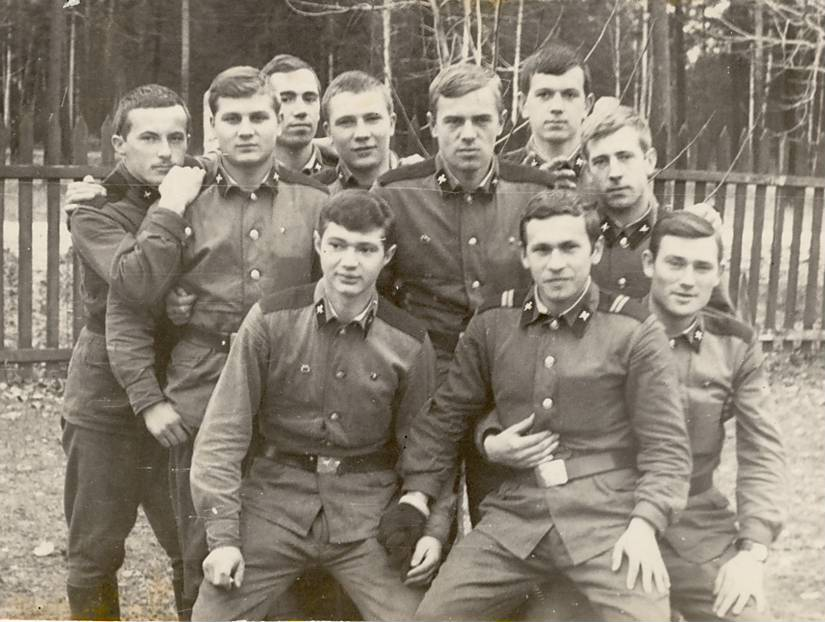

Первый слева, рядовой Майоров среди нашего призыва проводников спецвагонов весной 1971 года.
Я был старше всех и по образованию, и по возрасту. Однако сержантом отделения назначили родственника или земляка одного из офицеров соседнего подразделения нашей базы, который ничем не выделялся среди нас.
Стало понятно, что это несправедливо. Священное право командира отправлять подчинённого на смерть было дискредитировано. Позже святость повиновения на моих глазах нарушалась вдоль и поперёк, ослабляя подразделения в которых мне приходилось служить.
Был среди нас и член партии. На мой вопрос как его угораздило вступить в КПСС. Он уклончиво ответил, что отлично освоил работу экскаватора по добыче торфа и его приняли в партию в 18 лет и ещё год дали отсрочку, так как некому было работать на его участке. Позже, когда я приехал из академии и вступил в комсомол, то мой товарищ по призыву уже был партгрупоргом и я через месяц членства в комсомоле спросил его о возможности стать партийным. Он сказал, что меня не пропустит политотдел, надо набрать стаж в комсомоле. И я забыл о партийной карьере.
Позже я пожалел, что не стал партийным перед вторым поступлением в академию. Тогда вся эта политическая тусовка была забавой и важности для карьеры я никак не ощущал. Наверно, на моём месте любой приспособленец сделал бы головокружительную карьеру и отправился поступать в академию второй раз в качестве партийного старшего сержанта, но для этого нужно было иметь старших руководителей в семье или на службе. Но у меня в то время их не оказалось. Да и должность замполита в нашей части была вакантной.